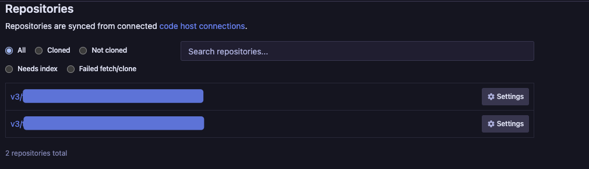

Setup Sourcegraph Locally
I went through the Sourcegraph directions, but had a few challenges due to the majority of code being behind SSH access with Azure DevOps.
Finally figured out how to do this, with multiple repos in one command and no need to embed a token using https.
Navigate to: manage-repos and use this.1 Better yet, use Loading configuration via the file system (declarative config) - Sourcegraph docs and persist locally in case you want to upgrade or rebuild the container.
{
"url": "ssh://git@ssh.dev.azure.com",
"repos": [
"v3/{MYORG}/{PROJECT_NAME}/{REPO}",
"v3/{MYORG}/{PROJECT_NAME}/{REPO}"
]
}
For the json based storage try:
{
"GITHUB": [],
"OTHER": [
{
"url": "ssh://git@ssh.dev.azure.com",
"repos": [
"v3/{MYORG}/{PROJECT_NAME}/{REPO}",
"v3/{MYORG}/{PROJECT_NAME}/{REPO}"
]
}
],
"PHABRICATOR": []
}
To ensure SSH tokens are mounted, you need to follow-up the directions here: SSH Access for Sourcegraph
cp -R $HOME/.ssh $HOME/.sourcegraph/config/ssh
docker run -d \
-e DISABLE_OBSERVABILITY=true \
-e EXTSVC_CONFIG_FILE=/etc/sourcegraph/extsvc.json \
--publish 7080:7080 \
--publish 127.0.0.1:3370:3370 \
--volume $HOME/.sourcegraph/extsvc.json:/etc/sourcegraph/extsvc.json:delegated \
--volume $HOME/.sourcegraph/config:/etc/sourcegraph:delegated \
--volume $HOME/.sourcegraph/data:/var/opt/sourcegraph:delegated \
sourcegraph/server:3.34.1

LSIF For Go
I didn't get this to work yet with my internal repos, but it's worth pinning as Go module documentation for API docs can be generated for review as well.
Change darwin to linux to use the linux version.
go install github.com/sourcegraph/lsif-go/cmd/lsif-go@latest
sudo curl -L https://sourcegraph.com/.api/src-cli/src_darwin_amd64 -o /usr/local/bin/sourcegraph
sudo chmod +x /usr/local/bin/sourcegraph
{{< admonition type="Tip" title="Docker" open=true >}}
docker pull sourcegraph/lsif-go:v1.2.0
{{< /admonition >}}
Now index code in repo
lsif-go
sourcegraph_host=http://127.0.0.1:7080
sourcegraph -endpoint=$sourcegraph_host lsif upload